Design Process
Objective:
Follow a software development process to analyze a problem, and to design, build, and test software solutions.

Project: LitKidz
 GitHub Repository
GitHub Repository
Website
My objective was to create a user-friendly and engaging financial literacy application for children aged 7-12. The problem is the lack of accessible, age-appropriate financial education tools for this demographic.
Analysis:
Target Audience: In my research, I explored numerous educational websites dedicated to financial literacy for kids. Most of these sites were designed for children aged 12 and older. This discovery guided my focus on creating a tailored financial literacy platform for a younger audience, aged 7-12, to meet their distinct learning requirements.
During my research, I came across a helpful website called "SuperSquad" designed for younger kids. This discovery was instrumental in analyzing and understanding the progress made in the field of financial literacy for children.
supersquadDesign:
Wireframes and Mockups:The mockups was design to be incorporate colorful and child-friendly visuals.
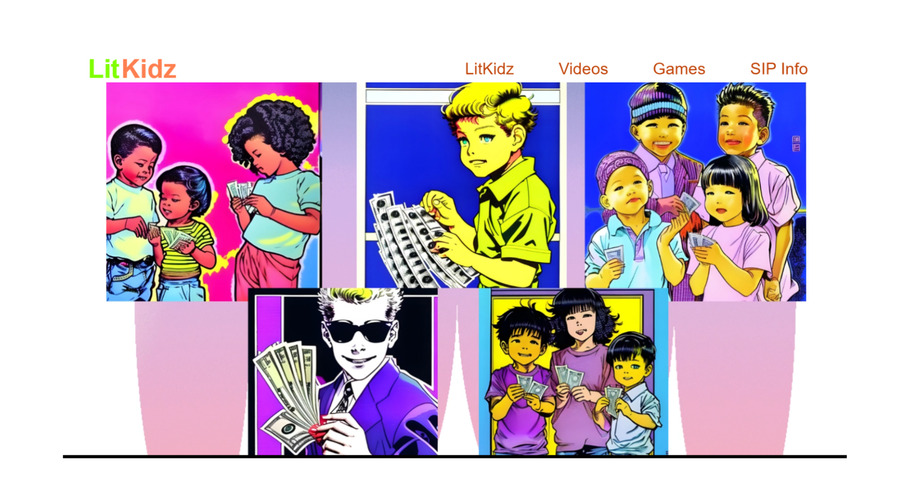 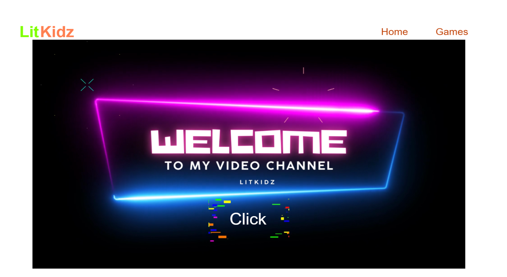 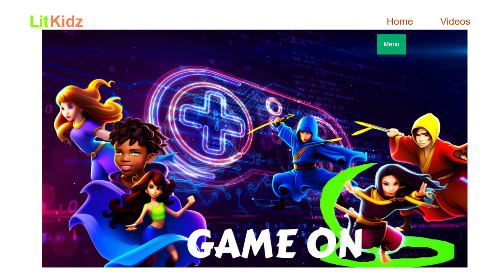


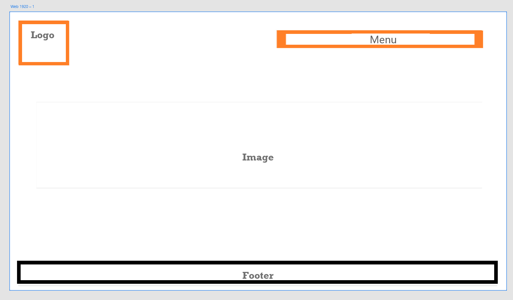 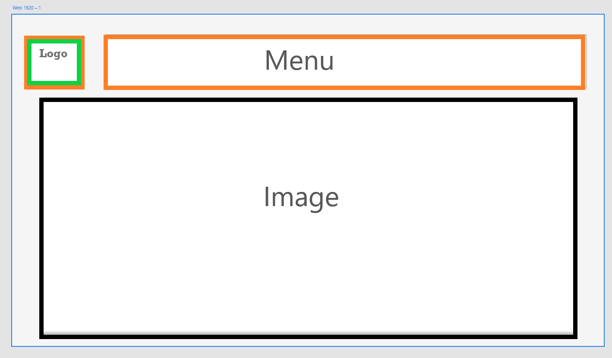 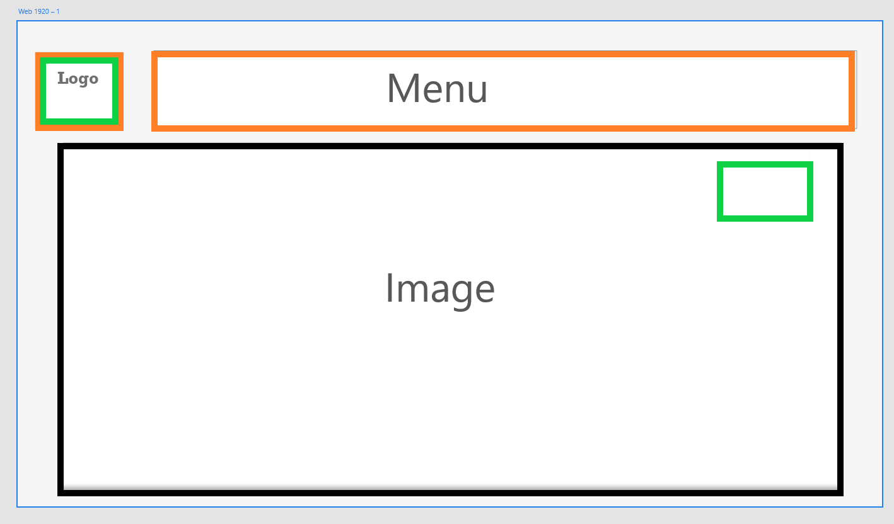
Development:
Development Timeline:Over the course of this 5-week timeline, I've meticulously planned and executed each stage of development for the financial literacy platform. This journey involved ideation, design, prototyping, and rigorous testing to ensure a polished final product ready for presentation and demonstration.

IDE: Visual Studio Code
Development tools and technologies that can create an engaging and responsive user interface.
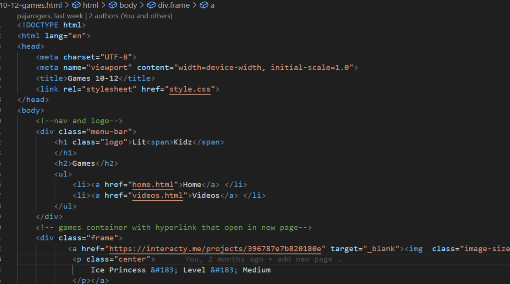 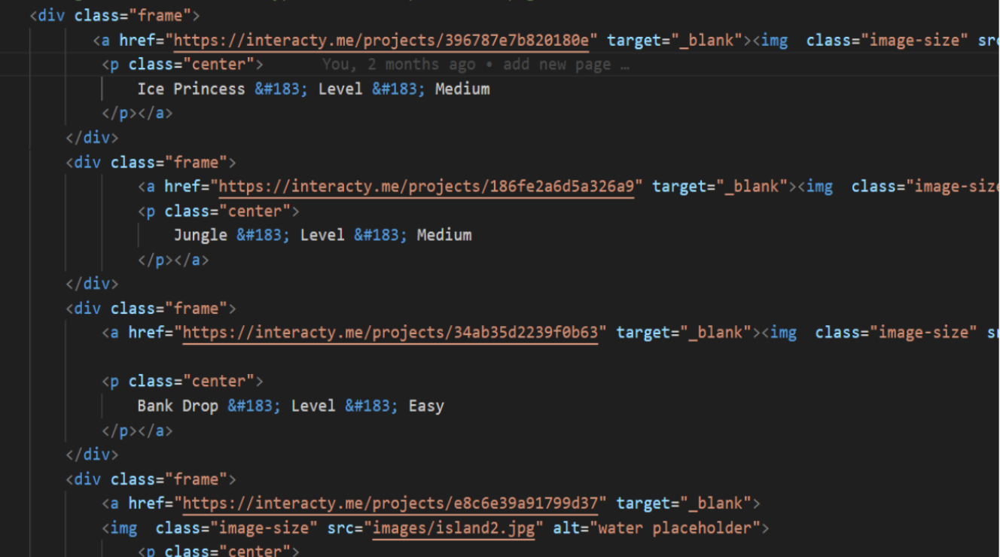
Testing:
Suvery:Each interactive element, lesson, and game is tested to ensure it's engaging and easy to understand for the target age group.
With the help of testers, including children in the target audience, provide feedback on usability and fun factor.

Feedback and Improvement:
Used this feedback from the survey to make necessary improvements and updates.The survey was taken by Ciniya: age-12, Katie:age-7, Mr.Brandford, 1st grade teacher Mrs.Young, Andrew: age-7.
Objective:
Escape Room 313 is an immersive Python game that challenges players with intricate puzzles within Room 313. With captivating storytelling and engaging graphics, it offers a thrilling adventure for all ages. Our development process prioritizes user experience, ensuring an unforgettable journey for players."
Project: Escape Room 313
GitHub RepositoryMy objective was to create a user-friendly and engaging financial literacy application for children aged 7-12. The problem is the lack of accessible, age-appropriate financial education tools for this demographic.
Analysis:
Goal: Define the game's objectives and what players should achieve.
Requirements: List all functional and non-functional requirements such as user interactions, game mechanics, graphics, and performance.
Target Audience: I aim to create a game experience that is accessible and enjoyable for players of all ages by tailoring the game's challenges and content to a diverse audience with varying skill levels and preferences."
Algorithms or logic: Implementing multiple-choice questions at each stage of the game, where the player must make the right choice to advance to the next stage or face a game-over scenario."
Design:
Application:The game, "Escape Apartment 313," is designed as a text-based Python application. It consists of several functions that handle different aspects of the game, such as displaying the title screen, setting game rules, getting user input, and managing the game's progression.
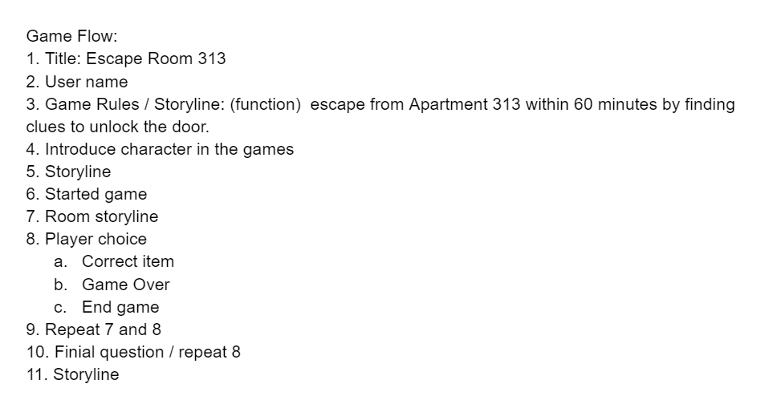Implementation:
IDE: Visual Studio Code Code:Python
No Python libraries was used.
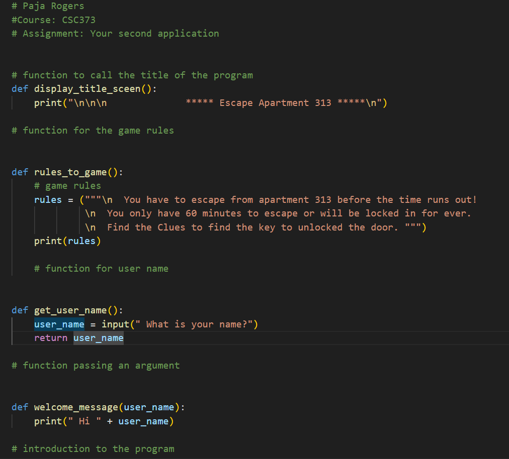Test and Debug:
While I can't provide direct debugging assistance within VS Code, I can provide you with some general guidance on how to debug your Python code using VS Code to ensure all choices work correctly and to catch any typos or delays. Here are the steps you can follow
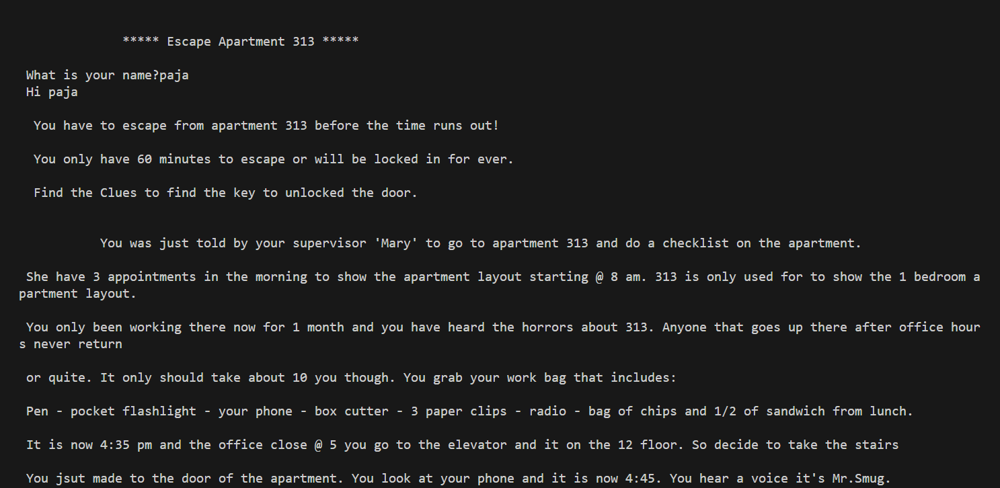
1. Set Breakpoints: Open your Python script in VS Code and set breakpoints at critical points in your code, such as before each choice prompt or significant function call. To set a breakpoint, click on the line number in the code editor's margin.
2. Start Debugging: Click the "Run and Debug" button in the VS Code sidebar, or press `F5` on your keyboard to start debugging.
3. Step Through Code: Once debugging starts, you can use the following debugging controls:
-`F10` to step over a line of code.
-`F11` to step into a function call.
-`Shift + F11` to step out of a function.
-`Shift + F5` to stop debugging.
4. Inspect Variables: While debugging, you can hover over variables in your code to see their current values, helping you identify any typos or unexpected values.
5.Watch Expressions: You can add specific variables or expressions to the watch list to monitor their values as you step through the code.
6. Console Output: Pay attention to the output in the Debug Console panel at the bottom of the VS Code window. It will display any print statements, allowing you to verify that there are no delays and that the correct messages are being displayed.
7. Fix Errors: If you encounter any errors or issues during debugging, use the information provided in the Debug Console and the debugging controls to identify and fix the problem.
8. Test All Choices: Make sure to test all possible choices within your game to ensure that they work as expected and that the game progresses correctly.
9. Save Changes: If you make any fixes to your code while debugging, be sure to save the changes in the code editor.
10. Repeat: Continue debugging and testing until you are confident that all choices work correctly and there are no typographical errors or delays.
With the help of testers, including children in the target audience, provide feedback on usability and fun factor.